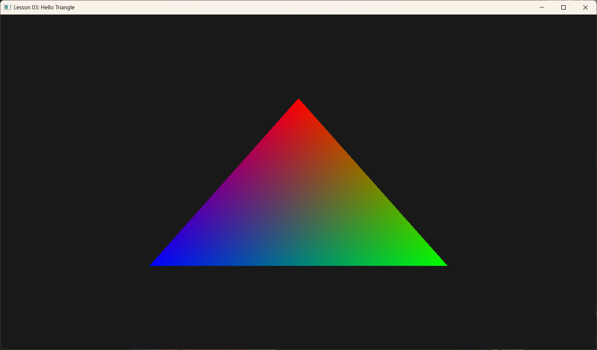

Lesson 03: Hello Triangle (你好，三角形)

1. Introduction (引言)
在上一节课中，我们学会了如何初始化 DirectX 12 并清除屏幕（把它刷成蓝色）。虽然这证明了显卡在工作，但我们的屏幕依然是一片虚无。 本节课的目标是渲染计算机图形学中最基本的图元——三角形。
不要小看这个三角形，为了画出它，我们需要打通整条 渲染管线 (Graphics Pipeline)。这就像为了点亮第一个灯泡，我们需要先铺设好整栋大楼的电路。
2. The Concepts (核心概念)
渲染管线就像一个工厂流水线，数据（顶点）从一端进去，像素（图像）从另一端出来。在 DX12 中，我们需要配置这条流水线的每一个环节：
- Input Assembler (IA): “原材料进料口”。负责把内存里的顶点数据读取出来，组装成几何形状（三角形）。
- Vertex Shader (VS): “造型师”。处理每一个顶点，确定它们在屏幕上的位置。
- Rasterizer (RS): “扫描仪”。把三个顶点围成的三角形，“像素化”成屏幕上的一个个方格。
- Pixel Shader (PS): “涂色师”。决定每个像素最终显示什么颜色。
- Output Merger (OM): “装箱员”。把最终颜色写入后台缓冲区，准备显示。
为了让这条流水线跑起来，我们需要几个关键组件： * Vertex Data: 告诉 GPU 三角形的三个角在哪里，是什么颜色。 * Shaders (HLSL): 告诉 GPU 怎么处理这些顶点和像素。 * Root Signature: 类似于函数的定义头，告诉 Shader 数据“长什么样”。 * PSO (Pipeline State Object): 把上面所有配置（Shader、混合模式、深度测试等）打包成一个不可修改的“状态对象”。
3. Code Implementation (代码实现)
3.1 Shaders (着色器脚本)
我们首先需要编写一段简单的 HLSL (High-Level Shader Language) 代码，保存在 shaders.hlsl 中。
DX12 的管线是可编程的，这意味着我们必须写代码告诉显卡如何处理顶点和像素。
// 结构体定义：对应 C++ 端的 Vertex 结构
struct VertexIn
{
float3 PosL : POSITION; // 输入位置 (Local Space)
float4 Color : COLOR; // 输入颜色
};
// 结构体定义：Vertex Shader 输出给 Pixel Shader 的数据
struct VertexOut
{
float4 PosH : SV_POSITION; // 裁剪空间位置 (System Value)
float4 Color : COLOR; // 颜色 (会插值)
};
// 1. 顶点着色器 (Vertex Shader)
// 作用：处理每个顶点。在这里我们仅仅是把位置“传递”下去。
VertexOut VS(VertexIn vin)
{
VertexOut vout;
// 为了简单，我们假设输入的坐标已经在屏幕坐标系 (-1 到 1)
// 补齐 W 分量为 1.0
vout.PosH = float4(vin.PosL, 1.0f);
// 直接把颜色传给像素着色器
vout.Color = vin.Color;
return vout;
}
// 2. 像素着色器 (Pixel Shader)
// 作用：决定每个像素的颜色。
// 这里的 pin 是由三个顶点的数据经过“插值”后得到的。
// 例如：如果一个顶点是红，一个是绿，中间的像素就是黄。
float4 PS(VertexOut pin) : SV_Target
{
return pin.Color;
}
3.2 Root Signature (根签名)
在 DX12 中，Shader 也是一个“函数”。凡是函数，就需要定义它的参数列表（签名）。 * Root Signature 就是这个参数列表的定义。 * 它告诉 GPU：我的 Shader 需要 2 个纹理，1 个常量表，3 个 32位整数... * 本课情况：我们的 Shader 很简单，不读取纹理也不读取常量。但是，DX12 依然强制要求绑定一个（空的）Root Signature，否则管线无法建立。
void HelloTriangleApp::BuildRootSignature() {
// 1. 定义一个空的根签名描述
CD3DX12_ROOT_SIGNATURE_DESC rootSigDesc;
// ALLOW_INPUT_ASSEMBLER_INPUT_LAYOUT: 这一点很重要，表示我们允许使用 Input Layout (顶点数据流)
rootSigDesc.Init(0, nullptr, 0, nullptr, D3D12_ROOT_SIGNATURE_FLAG_ALLOW_INPUT_ASSEMBLER_INPUT_LAYOUT);
// 2. 序列化 (将 C++ 结构体变成二进制流)
ComPtr<ID3DBlob> serializedRootSig = nullptr;
ComPtr<ID3DBlob> errorBlob = nullptr;
D3D12SerializeRootSignature(&rootSigDesc, D3D_ROOT_SIGNATURE_VERSION_1, &serializedRootSig, &errorBlob);
// 3. 创建根签名对象
m_d3dDevice->CreateRootSignature(
0,
serializedRootSig->GetBufferPointer(),
serializedRootSig->GetBufferSize(),
IID_PPV_ARGS(&m_rootSignature));
}
3.3 Defining & Uploading Geometry (定义与上传几何体)
想要画三角形，得先有数据。
- 定义顶点结构: C++ 中的结构体必须与 HLSL 中的
struct VertexIn匹配。 - 创建资源: 在 GPU 上申请一块内存 (
ID3D12Resource)。 - 上传数据: 使用
Map/Unmap将内存从 CPU 复制到 GPU (System Memory -> Upload Heap)。 - 创建视图: 填写
D3D12_VERTEX_BUFFER_VIEW，相当于给这块内存贴个标签，说明它是“顶点数据”。
// C++ 端顶点定义
struct Vertex {
XMFLOAT3 Pos; // 对应 HLSL 的 float3 PosL
XMFLOAT4 Color; // 对应 HLSL 的 float4 Color
};
void HelloTriangleApp::BuildGeometry() {
// 1. 定义三个顶点 (红，绿，蓝)
std::vector<Vertex> vertices = {
{ { 0.0f, 0.5f, 0.0f }, { 1.0f, 0.0f, 0.0f, 1.0f } }, // Top
{ { 0.5f, -0.5f, 0.0f }, { 0.0f, 1.0f, 0.0f, 1.0f } }, // Bottom Right
{ { -0.5f, -0.5f, 0.0f }, { 0.0f, 0.0f, 1.0f, 1.0f } } // Bottom Left
};
const UINT vbByteSize = (UINT)vertices.size() * sizeof(Vertex);
// 2. 创建 Upload Buffer (CPU 可写，GPU 可读)
auto heapProps = CD3DX12_HEAP_PROPERTIES(D3D12_HEAP_TYPE_UPLOAD);
auto bufferDesc = CD3DX12_RESOURCE_DESC::Buffer(vbByteSize);
m_d3dDevice->CreateCommittedResource(
&heapProps,
D3D12_HEAP_FLAG_NONE,
&bufferDesc,
D3D12_RESOURCE_STATE_GENERIC_READ,
nullptr,
IID_PPV_ARGS(&m_vertexBuffer));
// 3. 复制数据
UINT8* pVertexDataBegin;
CD3DX12_RANGE readRange(0, 0); // 我们不读 CPU 端的数据
m_vertexBuffer->Map(0, &readRange, reinterpret_cast<void**>(&pVertexDataBegin));
memcpy(pVertexDataBegin, vertices.data(), vbByteSize);
m_vertexBuffer->Unmap(0, nullptr);
// 4. 初始化视图 (View)
m_vertexBufferView.BufferLocation = m_vertexBuffer->GetGPUVirtualAddress(); // 显存地址
m_vertexBufferView.StrideInBytes = sizeof(Vertex); // 每个顶点多大？
m_vertexBufferView.SizeInBytes = vbByteSize; // 总共多大？
}
3.4 Input Layout (输入布局)
GPU 拿到顶点数据时，只是一堆二进制。Input Layout 充当翻译官，告诉 GPU：“前 12 个字节是位置(Position)，后 16 个字节是颜色(Color)”。
m_inputLayout = {
// 语义名称(POSITION)，索引(0)，格式(FLOAT3)，槽位(0)，偏移(0)...
// 对应 struct Vertex { XMFLOAT3 Pos; ... }
{ "POSITION", 0, DXGI_FORMAT_R32G32B32_FLOAT, 0, 0, D3D12_INPUT_CLASSIFICATION_PER_VERTEX_DATA, 0 },
// 对应 struct Vertex { ... XMFLOAT4 Color; }
// 偏移 12 字节，因为前面的 Pos 占用了 3 * 4 = 12 字节
{ "COLOR", 0, DXGI_FORMAT_R32G32B32A32_FLOAT, 0, 12, D3D12_INPUT_CLASSIFICATION_PER_VERTEX_DATA, 0 }
};
3.5 Pipeline State Object (PSO - 管线状态对象)
DX12 要求我们将大部分渲染状态（Shader、Input Layout、混合模式、深度设置、光栅化状态等）“烘焙”到一个对象 PSO 中。 * 好处: 驱动程序可以在创建时预先校验和优化，运行时切换 PSO 速度极快。 * 坏处: PSO 是不可变的。如果你想换个 Shader？换个混合模式？不好意思，你必须创建另一个 PSO。
void HelloTriangleApp::BuildPSO() {
D3D12_GRAPHICS_PIPELINE_STATE_DESC psoDesc = {};
// 1. 组装积木：输入布局、根签名、Shader
psoDesc.InputLayout = { m_inputLayout.data(), (UINT)m_inputLayout.size() };
psoDesc.pRootSignature = m_rootSignature.Get();
psoDesc.VS = { reinterpret_cast<BYTE*>(m_vsByteCode->GetBufferPointer()), m_vsByteCode->GetBufferSize() };
psoDesc.PS = { reinterpret_cast<BYTE*>(m_psByteCode->GetBufferPointer()), m_psByteCode->GetBufferSize() };
// 2. 默认状态：实心填充、不混合、无深度测试
psoDesc.RasterizerState = CD3DX12_RASTERIZER_DESC(D3D12_DEFAULT);
psoDesc.BlendState = CD3DX12_BLEND_DESC(D3D12_DEFAULT);
psoDesc.DepthStencilState.DepthEnable = FALSE;
psoDesc.DepthStencilState.StencilEnable = FALSE;
// 3. 拓扑类型：我们画的是三角形
psoDesc.PrimitiveTopologyType = D3D12_PRIMITIVE_TOPOLOGY_TYPE_TRIANGLE;
// 4. 告诉 PSO 我们要画到哪里 (必须匹配 SwapChain 格式)
psoDesc.NumRenderTargets = 1;
psoDesc.RTVFormats[0] = DXGI_FORMAT_R8G8B8A8_UNORM;
psoDesc.SampleDesc.Count = 1; // 1x 采样 (无抗锯齿)
// 5. 生成对象 (这是一个耗时操作，应在初始化时完成)
ThrowIfFailed(m_d3dDevice->CreateGraphicsPipelineState(&psoDesc, IID_PPV_ARGS(&m_pso)));
}
4. The Render Ritual (渲染仪式)
在 OnRender 函数中，我们终于可以发号施令了。
void HelloTriangleApp::OnRender() {
// 1. 重置并绑定 PSO (这是最重要的状态切换)
// 我们在此处直接传入 PSO，如果不传，之后通过 SetPipelineState 传也可以
ThrowIfFailed(m_commandAllocator->Reset());
ThrowIfFailed(m_commandList->Reset(m_commandAllocator.Get(), m_pso.Get()));
// 2. 准备画布 (资源屏障 + 清屏)
// ... (同 Lesson 02，此处省略) ...
m_commandList->RSSetViewports(1, &m_screenViewport);
m_commandList->RSSetScissorRects(1, &m_scissorRect);
// 3. 绑定管线资源 (关键步骤)
// A. 绑定签名 (契约)
m_commandList->SetGraphicsRootSignature(m_rootSignature.Get());
// B. 绑定数据 (顶点缓冲区)
// 参数: Slot 0, 1个Buffer, 视图指针
m_commandList->IASetVertexBuffers(0, 1, &m_vertexBufferView);
// C. 设定形状 (三角形列表)
m_commandList->IASetPrimitiveTopology(D3D_PRIMITIVE_TOPOLOGY_TRIANGLELIST);
// 4. 绘制指令 (Draw Call)
// 参数: 3个顶点, 1个实例, 从第0个顶点开始, 从第0个实例开始
m_commandList->DrawInstanced(3, 1, 0, 0);
// 5. 收尾 (资源屏障 -> 提交 -> 呈现 -> 同步)
// ... (同 Lesson 02，此处省略) ...
}
总结
这就是 DX12 的“Hello World”。虽然代码量很大，但所有的设置都是为了让 GPU 能够以最高的效率、无歧义地工作。 一旦你理解了 Buffer (数据) + Shader (逻辑) + PSO (状态) 这一铁三角关系，后面的任何高级效果（光照、纹理、阴影）都只是在这个框架上添砖加瓦而已。